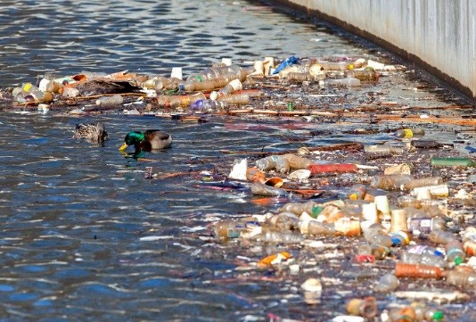

The Importance of Water Conservation
1. Essential for Life: Water is fundamental to every aspect of life on Earth. Every organism, from plants to animals and humans, relies on water for survival. Without clean and available water, our ecosystems, food supply, and health are at risk.
2. Limited Resource: While Earth appears to have abundant water, only 1% of it is accessible freshwater. The remaining water is either saltwater in oceans or trapped in glaciers and polar ice caps. Thus, water is far scarcer than it may seem.
3. Climate Change Impact: As temperatures rise, droughts and water shortages are becoming more frequent, affecting regions worldwide. Climate change disrupts natural water cycles, diminishing sources of drinking water and making conservation crucial.
4. Pollution Threat: Industrial waste, chemicals, and pollutants severely threaten freshwater sources. Rivers, lakes, and groundwater reserves suffer contamination from human activities, further reducing the availability of clean water.
Water Pollution by Country
China: China’s rapid industrialization has led to significant water pollution, with factories discharging untreated waste into major rivers, affecting both ecosystems and human health. Additionally, high population density exacerbates the issue, with municipal sewage often released into water bodies without proper treatment.

India: In India, industrial waste and untreated sewage are primary contributors to water pollution. Major rivers, such as the Ganges, are severely polluted by untreated municipal and industrial waste, leading to health risks for people and wildlife.
Bangladesh: Water pollution in Bangladesh is largely due to the discharge of toxic chemicals from the textile and dyeing industries into rivers. This results in severe contamination, particularly in the Buriganga River.
USA: In the United States, water pollution is often caused by agricultural runoff, which introduces large amounts of pesticides, herbicides, and fertilizers into rivers and lakes. Industrial waste and plastic pollution also play significant roles in degrading water quality.
Mexico: In Mexico, water pollution is largely due to industrial discharge and agricultural runoff, which introduce harmful chemicals and pollutants into the country’s water bodies.
Nigeria: Oil pollution in the Niger Delta and urban waste are major sources of water contamination. Lack of sanitation infrastructure exacerbates the problem.
Brazil: The Amazon faces pollution from mining and deforestation, contaminating rivers with mercury and sediment. Industrial and urban waste also affect water quality.
Back to Home